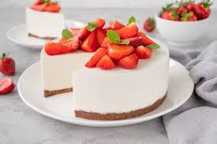

Tarta

Descripcion
Exquisita masa de sabores, para todas las edades y apetitos
Ingredientes
Pasos
- Preparar la masa mezclando harina, huevos y un poco de agua.
- Echarle sal a gusto.
- Amasar y meter en el horno.
- Decorar a gusto y servir para deleitar.
Return | Next
Home